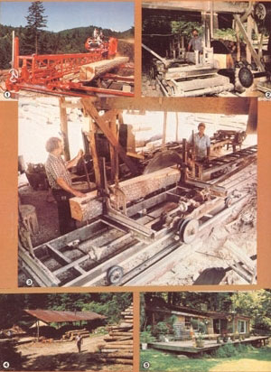

If you're the type of person who prefers the clean smell of fresh sawdust to the scent of expensive cologne, if you can imagine the beauty of the sudden quiet when a saw is shut down after a long morning's workout, and if you like the idea of pocketing an honest profit as a happy customer drives away with a pickup load of lumber . . . then it might be worth your while to explore the possibility of owning and operating your own family sawmill.
Don't be mistaken, though . . . sawyering is not an easy profession to take up. Far from it . . . it demands muscle-straining, back-taxing work! Still, since it does allow you to be your own boss-and to earn as much (or as little) as your energy, ambition, and luck will permit-cutting lumber for a living can sure beat the heck out of working for someone else . . . either in a stuffy factory or an air-conditioned office.
Furthermore, despite the weakness of the economy and the mounting power of the large lumber "factories" (which are causing the demise of small operations everywhere), a few well-organized, intelligently run, independent sawmills are somehow managing to remain financially solvent-and even to thrive-during these difficult times.
But why not learn the facts from "them that's doin' "? Here are a few brief profiles of folks who are now successful small-scale sawyers . . some observations as to why they're making a go of it when others are facing bankruptcy . . . and a number of suggestions as to how, if you've a mind to, you might do the same.
HIGH ACHIEVERS
To supplement the income of his working Ohio farm, Ronald H. bought-in 1978-a Mobile Dimension saw that he could hitch to the back of his pickup and haul out into the woods to log and cut boards for his neighbors. He chose the portable outfit, rather than a larger circular saw, because he knew that he'd be cutting only during off farming seasons. Currently, still working only a few months a year with his Mobile saw, Ron is pleased to say that he and his mini-mill can make as much as $200 a day, which is double what he was able to earn when he started out.
Ralph J. and his two sons quit raising goats in the Blue Ridge Mountains when government regulations became too restrictive. At the time, they decided to settle back and catch up on their homestead projects until they could figure out another way to make their land work for them. So, in order to cut down on the land-clearing and construction costs that faced them, the family purchased a used Mobile saw.
After learning-from local old-time saw; yers-just how to go about cutting wood properly, Ralph started to clear his land. But when folks discovered that his mill was up and running, he soon found himself unable to get his house built because too many people were asking to buy boards from him!
Not being one to pass up an opportunity-especially when it stared him in the eye and winked-Ralph rapidly set about marketing his lumber. He soon sold his original unit and bought an old circular saw with a diesel engine . . . a tool that, he figured, would let him cut enough lumber to satisfy the growing demand.
Not long thereafter, a reporter from a nearby daily newspaper came out to do a human interest story on Ralph and the "last of the mountain sawmills" . . . and after the article appeared, Ralph and his two boys (who helped him run the mill) found that they had more business than they knew what to do with! "Some Saturday mornings we couldn't even drive down the mill road, what with all the farmers waiting in their trucks for us to come sell them some wood!" Ralph proudly exclaims.
The family business is doing so well today that Ralph has expanded the operation to iriclude a small palletmaking plant, and may soon ("depending on how things go") even open a planing mill, too!
Our third sawing-for-profit success story centers on Jim B.-an electrical engineer from Dallas, Texas-who decided, several years ago, that he'd had enough of the constant pressures he faced working 10 or 12 hours a day to "earn a lot of money for someone else". So after a great deal of soul searching, he finally bought some land near a small city and moved his family across the country to settle upon it . . . with absolutely no idea of what he was going to do to earn a living in his "new world".
Upon arrival, Jim (like Ralph) decided to set up a small sawmill to reduce his landclearing and building expenses. However, unlike Ralph, Jim was unable to find anyone to teach him how to operate the old circular saw he'd bought. The Texan isn't one to give up easily, though, so he just set to and taught himself how to run the equipment!
"Sawing isn't very difficult to pick up," he says. "You've simply got to take it one step at a time and be careful to pay close attention to each of the tasks you perform. Then, if you do something wrong, you can correct it next time around . . . and if you do something right, you can repeat it!"
Jim soon found that he actually enjoyed the process of cutting wood, and this realization led to his eventual decision to take up sawyering professionally. So, once he'd developed his skill to the point that he was able to cut quality lumber consistently, Jim started to advertise his mill in the classified section of the nearby city's newspaper. It did take him a year or so to earn the trust of his neighbors and to establish his reputation . . . but today his business is thriving.
SOLVENT SAWMANSHIP
You've likely, from reading those examples, already formed a few ideas about what must be done to make a small mill turn a profit these days. For example, it's hard to overlook the fact that-even if you cut the highest-quality lumber and sell it at low prices-you darn well better advertise if you want to get customers. An occasional buyer may happen to drive by and stop at your mill . . . but to depend on this sort of walk-in business (which, believe it or not, has been a common practice in the past!) would almost certainly prove to be disastrous.
So if you begin to saw and want to sell . . . at the least, do as Jim did and take out an ad in the classified section of the nearest daily. And while you're at it, why not traipse up to the top of your mill road and hammer in a sign so folks can find you? You'd be surprised how many small mills have no sign, no advertising, and, as a result, no business nowadays.
Pretty soon-once folks discover that your wood is every bit as good as you say it is-you'll begin to benefit from word-of-mouth promotion. And you'll need the respect and trust of your neighbors if you hope to stay afloat . . . because you'll have to depend on local homesteaders, farmers, and such for about 90% of your business (the rest will come from sales to nearby dry kilns, pallet companies, planing mills, and the like). Fortunately, in most parts of the country, there are still plenty of people who'd rather buy boards from someone they know and trust than deal with a large, impersonal lumberyard.
Naturally, there are many details about the actual process of setting up a mill-and even about just how one gets a squared board out of a round log-that need to be examined . . . and it's a darn shame that there aren't more good books to explain the business step by step. As questions come up, though, you may be able to get assistance from your state forestry service (see the note at the end of this article for details). Or you might even want to look into one of the technical schools that offer full courses in sawyering.
EQUIPMENT SELECTION
In order to choose the right saw, you'll first have to determine what kind of operation you plan to run and how much money you can afford to invest in equipment. For instance, if you want to work merely on a part-time basis-as Ronald does-and if you can finance it, you might consider purchasing a Mobile Dimension saw directly from the company. The firm sells a basic outfit, which includes saw and power source, for a little over $7,000. (For more information, write or phone the helpful folks at Mobile Mfg. Co., Dept. TMEN, P.O. Box 258, Troutdale, Oregon 97060 . . . or telephone 503/666-5593.)
Other manufacturers are now marketing apparatus that will allow you to cut lumber with a chain saw. If you're planning to saw only small quantities of wood, you might want to investigate these relatively inexpensive products. (See the articles on such devices in MOTHER NO. 64, page 116 . . . and No. 77, page 120. To order back issues, turn to page 48.)
However, if you're thinking of going into full-time lumber production, your best bet will probably be to buy a circular saw matched with a diesel- or gas-fueled power unit (it might even be an old 18-wheeler engine). Belsaw is one of the largest and most respected manufacturers of this kind of equipment. (For more information, write to Belsaw Machinery Co., Dept. TMEN, 4637 Field Building, Kansas City, Missouri 64141 . . . or phone 800/821-3452.)
Although a new saw does represent a significant investment, most of the companies supplying such products will be happy to teach you to use their machinery, and they'll also be around to answer any questions that might come up later. (Again, because there's an astounding dearth of written material about the operation of small sawmills, the free advice could be worth a lot in the long run.) But if you're determined to be thrifty, you may well be able to pick up a used blade and power unit-perhaps from someone who's either been driven out of the business or retired from it-for around $5,000 (that's for both saw and motor).
While you're in a spending frame of mind, you might also want to consider buying a forklift to help tote wood around your lot. Bought new, such a vehicle will cost around $20,000, but you might be able to locate a used one for closer to $8,000 if you check with firms that use the handy machines regularly.
PROTECTING YOUR INVESTMENT
The bulk of your equipment maintenance chores will involve keeping your saw greased and its engine in good working order . . . and sharpening the blade periodically (often several times a day) with a good file. You'll keep your honing tasks to a minimum, though, if you brush off each log before you send it through . . . since it often takes only one dirty hunk of timber to dull a blade!
And as you clean the wood, look for nails or pieces of barbed wire that might be lodged in it. A single bit of metal-such as a nail-can completely ruin a set of expensive (about $75!) saw teeth. Sometimes, though, metal will become implanted in a sapling, and the bark will grow over it, so you won't always be able to detect these bit-butchers. For that reason, it's a good plan to keep an extra set of teeth on hand at all times.
PAUL BUNYAN, SLIDE OVER
Of course, in order to produce boards, a sawyer needs a steady supply of logs . . . and you'll have to determine whether you'll fell the trees yourself, buy timber from a logger, or cut up logs supplied by your customers. It used to be that any small-scale lumbermaker worth his or her salt would log all the necessary lumber . . cut it . . dry it . . . and sell it. But times have changed, and it's not always profitable to go through all four processes yourself.
Generally, the best bet is to find a few dependable loggers in your area who will sell you timber. But be careful not to purchase more wood than you think you can resell in a given time period. Ideally, you want to cut-and market-approximately 3,000 board feet in a day . . . keeping about one day's supply ahead. It also pays to saw up trees brought in by customers . . . charging them for your time and for the wear and tear on your equipment.
Just as you probably won't want to do your own logging, you will-in most cases-be better of avoiding the next step beyond sawing, which is air-drying the boards. Drying lumber is a time- and labor-consuming proposition (not to mention the fact that it takes up a lot of space).
PROFIT POTENTIAL
Once you've narrowed your scope and settled on sawing and selling as your activities in the timber trade, you'll still likely have to work away at it for at least a year before you begin to show any significant profit. Running a sawmill is not a get-rich-quick venture. However, if you're willing to be patient, develop your ability, and employ the discipline necessary to put in a full day's work, you could eventually earn as much as $30,000 annually.
You probably won't be able to sell (or saw) boards year round. During the coldest weather there simply isn't as much demand for lumber as there is from spring through fall. You might utilize the "off ' time to clean up your woodlot, though. By the time winter rolls around, your work site should be littered with slabwood scraps and sawdust . . . and those slabs can be sold by the pickup load for firewood, while the sawdust can likely be marketed for use as bedding and insulation around plants.
Then, if you just can't stay away from "cutting up", you might want to purchase a chain saw and start up a stovewood business to carry you through till you can start your mill up again in the spring.
PRICING
In general, lumber (even when it's still in log form) is bought and sold by the board foot, a unit of measure equal to a board that's one foot square and one inch thick. In order to figure the worth of a log, then, you must learn to estimate how many board feet you can get from the timber. (Once you've cut up the log, of course, you can simply measure the planks.)
Naturally, the price that you'll be able to ask for your lumber will depend upon the market and upon the varieties of wood available to you. As an example, though . . . Jim B., who buys mostly in the Southeast, says that he can purchase white pine logs for $150 to $170 per 1,000 board feet and-once they're cut-sell them for about $300 per 1,000. White oak, which is a hardwood and therefore more difficult to cut, can be bought for about the same price as the pine but sells for around $350.
For starters, you can check lumber prices at other mills to get an idea of what you should charge for your wood. And remember . . . if you can undercut someone else's rates and still turn a satisfactory profit, by all means do so!
"TIM-B-E-R!"
In the end, after you've weighed all the ideas in this article (and beefed that information up with data from other sources), only you can decide whether or not the challenge of starting up your own mill appeals to you. Certainly, a sawyer's life is a strenuous and often uncertain one (see the sidebar accompanying this article) . . . but at the same time, it can be a godsend for an individual who's willing to use both brain and brawn to wrestle a big old log and turn it into an income!
EDITOR'S NOTE: To find out more about how to set up a small sawmill operation, you might want to check with the Forestry Products Utilization Specialist at your state forestry office. One of that individual's duties is to direct people to other sources of information that could be helpful to them. Also, write to the folks at the Forestry Production Lab, Dept. TMEN, P.O. Box 5130, Madison, Wisconsin 53705 . . . or ask the lab's publications department (telephone 608/264-5637) for the pamphlet entitled Circular Sawmills and Their Efficient Operation and a list of other relevant publications.
SOME CONS OF BECOMING A LUMBERING PRO
An old sawmill-nestled back in a mountain cove and covered with kudzu and cobwebs from months of disuse-is just about as depressing a sight as a weathered old sawyer who's burdened with the weight of bills that can't be paid. Now failure is never pleasant to consider, but it's a possibility that you must be aware of if you're to understand fully what it could be like to be a woodcutter today.
Many small sawmills, you see, are definitely facing hard times, and most of these businesses (whose owners are used to the "old ways" of operation) are totally unprepared for the modern hardships they'll likely encounter.
Perhaps the single major factor behind the demise of many small sawmills (more important than economic instability, poor wood supplies, or even the ever-increasing government safety regulations) is the growing power of the bigger mills. These giant firms are, quite simply, pushing the "little fellers"out of business.
For example, a large mill or lumberyard might start to buy custom-cut wood from a family-owned mill to satisfy certain customers .. . and later demand that the small sawyer sign an exclusive contract to sell only to the larger outfit (which means the sawyer would have to give up all other customers and depend solely on the large mill for his or her income). Then, when the big mill has-for one reason or another-no further need of the special services, the small enterprise could be cut off . . . and would have no regular customers to fall back on.
Some large mills and yards also employ their own graders to determine the quality of all the wood that comes in for sale . . . and the prices that such a firm will pay are fixed at wholesale rates according to what the grader says a given batch is worth. Ultimately, then, the amount of money a small sawyer-selling to such an outfit-receives could be totally subject to the honesty of a grader he may never have seen. If that "expert" (whose "qualifications" are left up to his or her employer) is trying to help the boss save money or isn't quite on the up and up-and, at the same time, if the small-scale woodcutter isn't exactly sure how good his or her wood is-the big buyer could obtain top-grade lumber at low-grade prices. It happens . . . not always, but it does happen.
|
 |
|
|